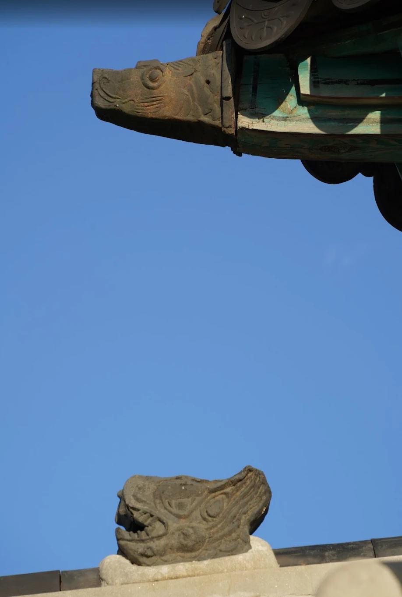
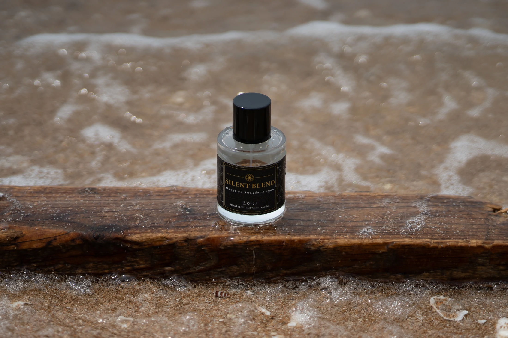

Heritage written in scent
SILENT
BLEND
BLEND
不同的故事相遇，
凝成一款香氣。
在江華聖公會教堂，韓屋的外觀與巴西利卡式的內部格局相遇。兩棵樹一同種下的故事，讓我們看見體貼與尊重。SILENT BLEND 將這份心意融入同一款香氣，以四種產品形式走進日常。
FIRST HERITAGE COLLECTIONGANGHWA, KOREA

About BALLO
Heritage written in scent
01 / A place of coexistence
韓屋的外觀，
巴西利卡式的格局。


熟悉的屋簷之下，室內空間向深處延伸，窗間灑落的光照見木造結構。不同建築語彙共處一室，成為 SILENT BLEND 的起點。
Different origins.
One quiet harmony.
One quiet harmony.



03 / Stories within
從屋簷到樹根，
三個場景，讀懂一個地方。
木材如何榫接、屋簷藏著哪些象徵，以及為何選擇讓不同傳統的樹木一起扎根。
04 / The scent
焚香般的沉靜，
與木質的溫潤輕柔交融。
這款香氣讓人想起古老的寺院或教堂：焚香的餘韻與木香交融，柔和地漫開。明亮的柑橘漸入柔和花香，最後留下檀香、香草與麝香的溫暖餘韻。
探索香調 ↗


For our partners
一起傳遞
SILENT BLEND 的故事。
若您正在為店面挑選產品，或規劃企業與機構贈禮，歡迎與我們聯繫。目前以現有包裝供應販售中的產品。
目前不提供客製包裝。